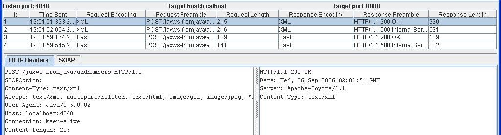

How can I use it ?
The wsmonitor workspace is undergoing extreme makeover. You can try the bleeding edge build or stable release.
Bugs will only be fixed in the bleeding edge build. So before
filing an issue, please try it with the bleeding edge build.
Let's get started!
- Download and Start Wsmonitor from Bleeding Edge or Stable Release.
- Develop a Web service using NetBeans and deploy on GlassFish as described in screencast #ws7.
- Override the endpoint address for the generated client by following these instructions. The only difference in the new endpoint address is that the port number is 4040 instead of 8080.
That's
it, now every SOAP request message sent and response message received
by this client is displayed in the wsmonitor console. The wsmonitor
console dumps showing HTTP headers and request/response
messages using SOAP and Fast Infoset are shown below.
HTTP headers for a SOAP Message
SOAP Request and Response Message
HTTP Headers for a FastInfoset Message
FastInfoset Request and Response Message
Send comments to users@wsmonitor.dev.java.net.